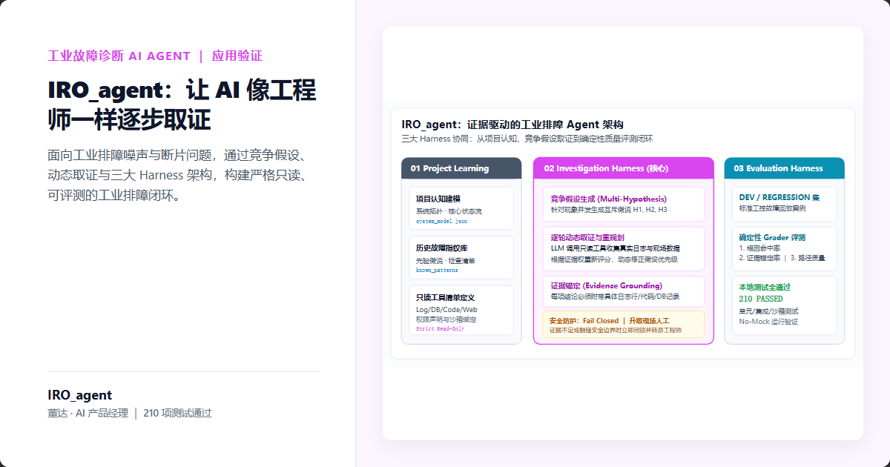
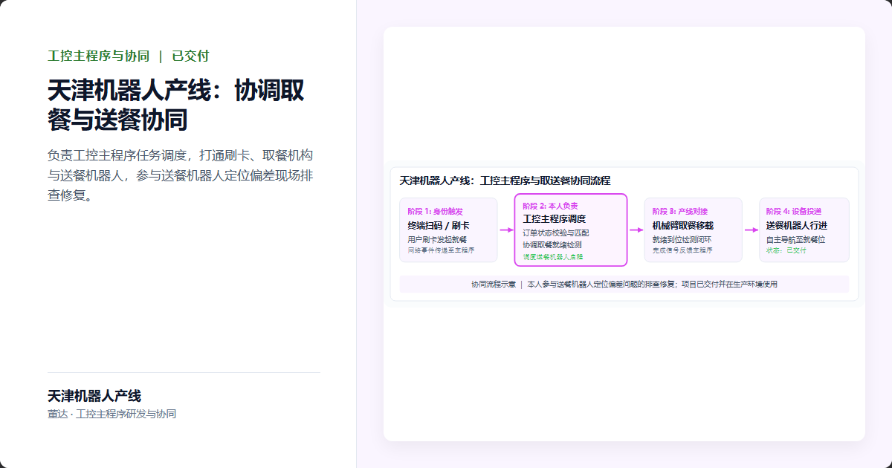
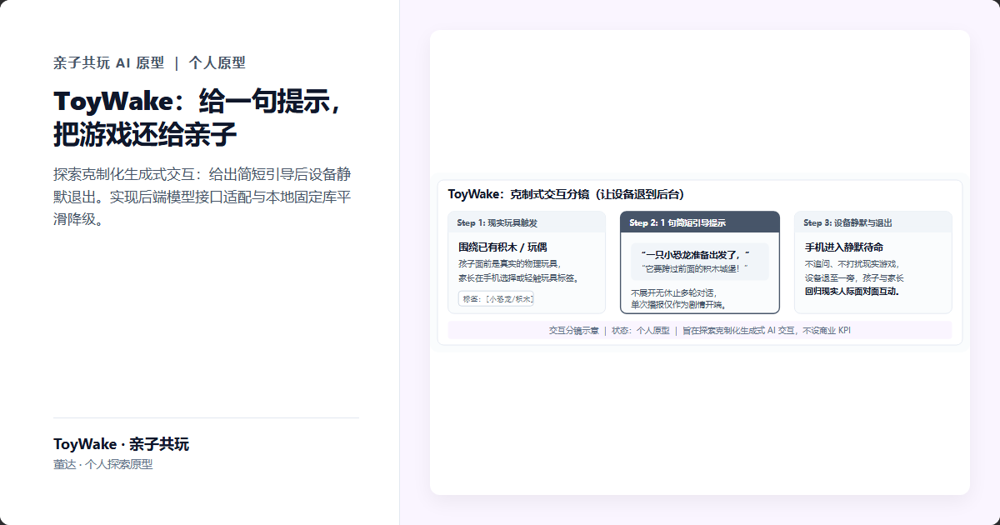
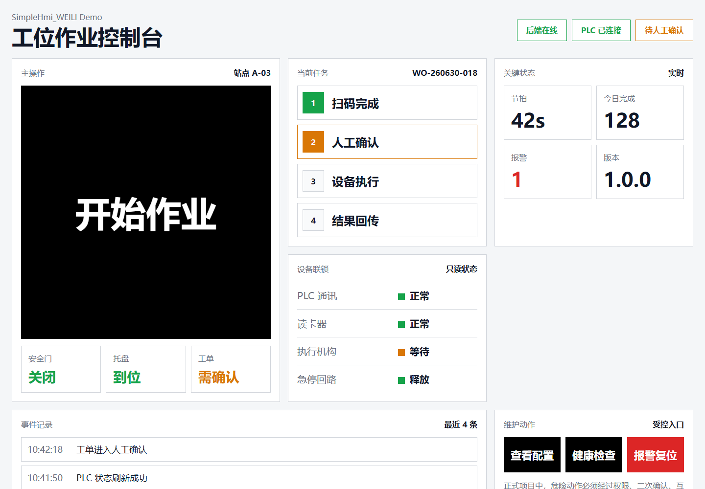
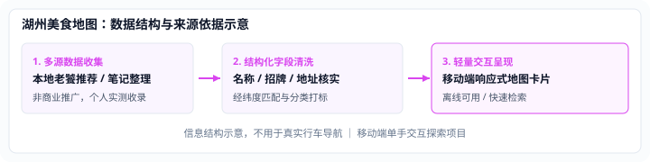
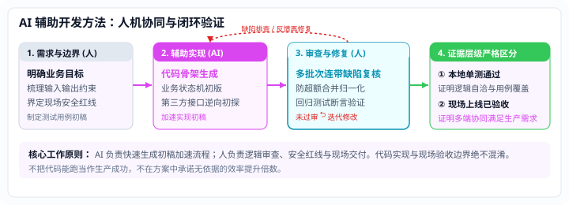

AI Solutions & Product Portfolio ｜ 董达
董达 · AI 产品经理 ｜ AI 解决方案与落地工程
懂业务 · 能做方案 · 亲手跑通可运行的原型与系统交付
从复杂现场痛点与企业非标诉求切入，不做空洞 PPT 演说，
用低成本 PoC 快速验证核心假设，推进系统集成与生产环境真实交付。
机械工程现场认知 × 商业策划闭环 × AI 智能体与工业全栈落地

Solution Delivery Framework
解决方案工程学：把业务痛点推进为低成本验证
不是盲目跟风卖 AI，而是先判断真实价值，再用可运行 PoC 和硬核运行证据降低企业决策成本。
从用户、流程、市场和物理现场约束中识别真正值得解决的痛点，不从“AI 能做什么”这一伪命题倒推。
严格判断是否值得引入 AI，把模糊诉求转化为明确业务目标、价值假设、关键链路与最小验证范围。
将业务目标拆解为可执行方案，明确 AI 能力边界、人工兜底规则、系统接口与验收标准，拒绝 PPT 空转。
运用全栈技术与 AI 辅助开发，亲手将方案做成可运行的原型或微系统，用最小成本验证核心假设。
接入真实接口、数据库、物理设备与业务系统，以测试覆盖、异常恢复与上线证据支撑规模化决策。
Featured Showcases & Gallery
精选作品与解决方案展厅
拿运行结果与架构证据说话：展示从模糊业务诉求、方案定义到可运行原型与生产落地的完整交付。

数字月台：复杂业务产品化与多终端协同中控
面对工厂车辆自动装车现场的复杂调度，将单屏展示需求重构为高可靠工业中控系统。统一维护订单状态机，打通多工位触摸屏交互、人脸识别与 PLC 硬件协议联调，具备秒级配置回滚与生产数据归一化校验。

IRO_agent：证据驱动的工业故障诊断 AI Agent
工业排障场景充斥设备噪声、主观误导与观测盲区。将大模型从“一次性回答”重构为“逐轮竞争假设驱动的多步调查智能体”。引入只读隔离沙箱保证设备安全，并构建 210 项自动化 Grader 评测实现防劣化守护。
更多解决方案与产品实践

天津机器人产线：跨系统协同与现场排障
参与天津版本工控主程序，处理刷卡终端、机械取餐机构与送餐机器人的状态协同与接口通信；深入现场排查机器人定位偏差并修复，协同恢复产线节拍。
考亭古街：从复杂诉求提炼差异化命题
面对非标文旅诉求，从市场、文化与客户目标中提炼“文旅溯源地”顶层命题；作为售前策划主创参与全过程，推动合同签订、节点交付与回款闭环。

ToyWake：克制交互与场景化 AI 激发
避免 AI 侵占真实亲子互动，定义“AI 只负责点火，随后退出”的产品边界；构建三步交互分镜与双层降级容错机制，完成 FastAPI + Android 双端原型验证。

SimpleHmi：No-Mock 交付原则与触屏规范
确立“生产链路禁止 Mock、功能完成必须有证据”的工业交付规范，沉淀从需求卡片到工控触屏界面的轻量化工程模板，探索 AI 辅助工程标准。

湖州美食地图：数据清洗与单手地图交互
多源店铺数据去重与经纬度拓扑纠偏，针对手机端优化单手操作视区与信息卡片，用低代码快速验证本地化垂直场景信息服务原型。

AI 辅助开发：协作闭环与证据分级
人负责问题定义与严密验收，AI 负责辅助加速。沉淀三级证据层级对比，建立“可检查、可回滚、无破绽”的 AI 原型工程交付标准。
Technical Prototyping & Delivery
技术不是身份，而是把方案做出来的能力
我的技术能力服务于解决方案：让方案不只停留在汇报里，而是尽快变成可运行 PoC，用真实结果支持决策。
能做应用
能做 Agent 与系统
能做工程判断
Business Judgment & Solution Design
业务判断与方案能力
能从复杂信息中判断“什么值得做”，再把判断变成客户听得懂、团队做得出的方案。
考亭古街，2019.07–2019.11。面对政府举办文旅发展大会、需要形成清晰主题的诉求，从市场、文化与客户目标中提炼“文旅溯源地”方案并获得认同。作为售前策划主创，参与设计服务从售前、实施到回款的全过程。所参与的设计服务合同金额为 212 万元。
政府举办文旅大会，文化资源丰富但缺乏清晰主题与顶层定位。
主创策划“文旅溯源地”方案，构建可感知文脉逻辑并获各方认同。
主持多轮商务沟通与方案汇报，推动项目立项与设计服务合同签订。
跨团队协同推动节点交付，完成合同履约与阶段性回款闭环。
我如何定义一个新产品 / 新业务
我通常不是从功能列表开始，而是先把用户、业务、市场和约束铺开，从中找到一个真正值得被放大的差异化变量，再围绕它形成产品命题、价值主张和执行蓝图。现在 AI Coding 让我可以把这一步继续推进到可运行原型。
Career Path
职业路径与可迁移能力
横跨机械工程、商业策划与工业软件实践，形成从物理现场到软件原型的跨界整合能力。
可迁移能力：理解现场物理约束与机械动作逻辑，建立对工业现场故障后果的敬畏感。
可迁移能力：听懂政企客户非标诉求，主创顶层方案并完成售前汇报与商务履约全过程。
可迁移能力：推动新项目立项与多角色协调，运用 AI 工具链加速需求拆解与方案原型落地。
可迁移能力：负责工业中控软件架构、多端 HMI 交互与协议联调，设计 IRO_agent 诊断 Agent 与确定性评测闭环。
Methodology
AI 辅助开发：协作闭环与证据分级
AI 辅助实现，人的判断与验证决定是否采用。
Get in Touch
讨论 AI 产品创新与解决方案落地
无论是探讨企业 AI 应用落地方案、快速 PoC 验证合作，还是全职团队加入，欢迎直接交流。